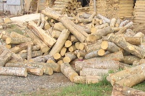

tamped 
/tampɔd/
v_rt.
“cut_in_two”
n.
a portion of something, such as a soap bar
Eng. portion; piece
Online dict status: -
Usage level: M
v.
for someone (egtamped, egpanamped, agent, eg><ø-, eg><ø-paN-) to cut something into two or more pieces; to chop down a tree; to break off; to pick something (e.g. flowers) (egtamperan, eg><an-)
cf. petpet
Egselem-selem a eg-enew su egpanamped a te ipil-ipil su egraheen ku.
Eng. cut off; cut up; chop down; break off; severe, to; separate; pick
Online dict status: -
Usage level: M
v.
for something or some action (egkatamped, natamped, actor, egkA><ø-) to cut off or terminated
Eng. cut off; chop down; break off; severe, to; terminate
Online dict status: -
Usage level: M
n.
(tinamped) a cut wood
Due tinamped ne kayu diyè te limang te baley.
There's cut wood behind the house.
Eng. cut wood (n)
Tag. pinutol na kahuy
Ceb. pinutol
Online dict status: -
Usage level: R
Updated by: RJH,AAA,QDL,RJH
Last updated: 05/Mar/2012
"matamped" in text "Proving Innocence I (When Accused of Theft)"
"patamperi" in healthbook "Migpamawian ni Inuk ka sumbaley rin ne migpangaliskis"
"Egpatamped" in healthbook "Migpamawian ni Inuk ka sumbaley rin ne migpangaliskis"
"Egpanamperan" in healthbook "Anak ni Biltu ne migkerid"
"tamperen" in healthbook "Ka an-anayan ne peg-uyamu ni Lolita te mig-anak"
"itamped" in healthbook "Ka an-anayan ne peg-uyamu ni Lolita te mig-anak"
This page last updated: 03-Jan-2020
Copyright © 2009-2014, Matigsalug Language Christian Association, Inc